徳林寺/愛知県
名古屋市の郊外、相生山にある徳林寺は曹洞宗の寺院である。
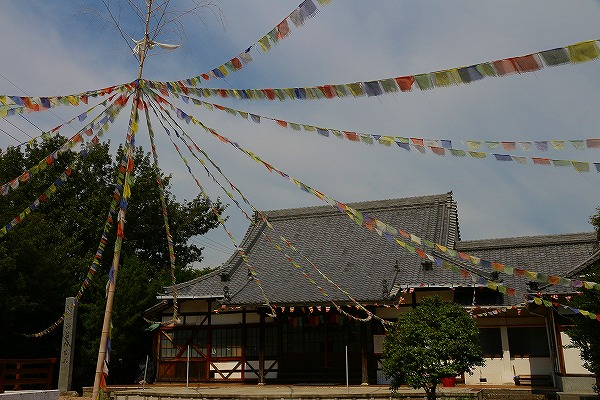
曹洞宗といえばバリバリの禅寺。
音を出さずにタクアンを食べたりするところですよね（幼稚な認識ですいやせん）。
ところがどうも様子が変だ。
本堂の前にはタルチョーが広がっている。
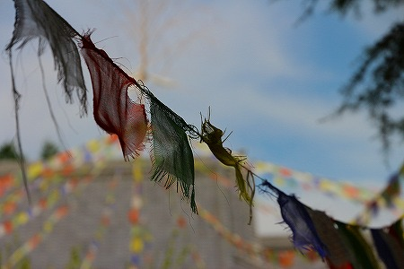
タルチョーとはチベットでよく見られる五色の祈祷布だ。
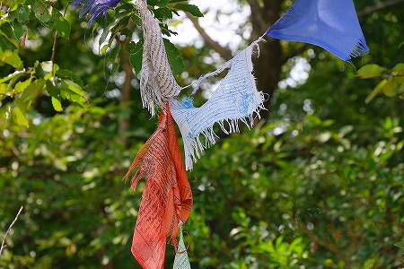
一枚一枚には経文が印刷されており、それらが風にたなびくことで経文を読んだのと同じ効果があるとされている。
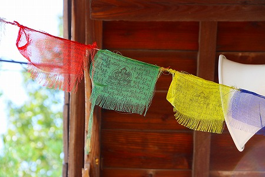
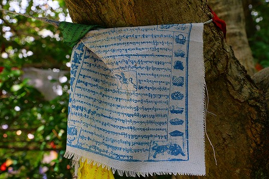
中央の巨大な竹から四方八方にタルチョーが広がっている。
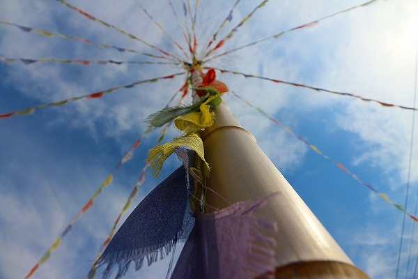
この光景はかつてネパールでも見たことがあったが、何だか運動会みたいで見ているだけでワクワクしてくるじゃないか。
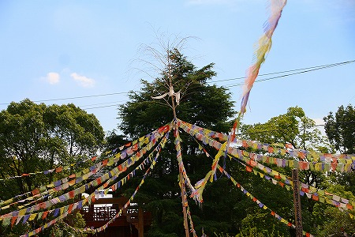
そもそもチベット仏教ではこのタルチョーやマニ車など、はためいたり回したりするだけで経文を読んだのと同じ功徳が得られる、という自動読経システムが多いような気がする
さらに水車で永遠に回転し続けるマニ車などは水が流れる限りずーっとお経をあげていることになる。
…横着すぎないか？
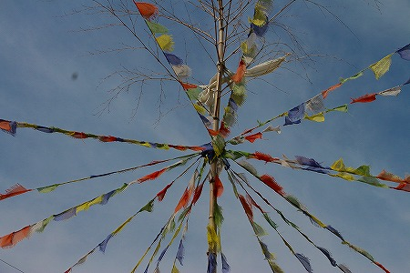
ただ、それだけ多くの経文を唱えなければならない世界なのかもしれない。
お経の価値観やありがたみなど国や人によって様々なんだなーと思いました（棒読み）。
さて、本堂である。
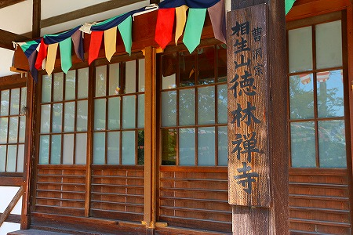
軒先の旗以外はごくごく普通のお寺だ。繰り返すがここは曹洞宗のお寺である。
本堂前の掲示板には農園の紹介とかエコハウスの企画、国際交流レストラン、手作り品販売などのポスターが。
相互扶助、世代交流、エコ、手作り、コミュニティーという因果者の私にはあまり縁のない言葉が踊っていて、チョット眩しい。
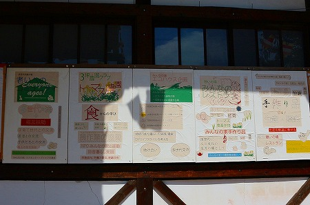
それらはみんなの家というケアハウスの運用資金として利用されるのだとか。
境内には上記のイベントのいずれかに使われたのだと思しきカラフルなハウスが置いてあった。
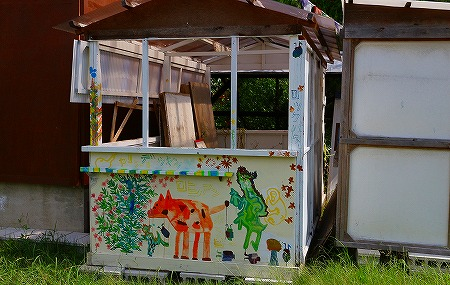
ここで何らかのイベントを開いているようだ。
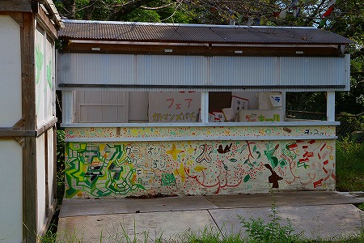
境内に尼さんがいたので声を掛けると東南アジアの某国からいらっしゃった方だという。
このお寺は韓国、中国、タイ、ビルマ(ミャンマー）、インドネシア、ネパール、バングラディッシュ、モンゴルといったアジア諸国から留学僧を招聘しているそうで、現在も何人かのお坊さんが修行している。
なるほど、このお寺のインターナショナルな感じはそういうことなのか。
などと境内をぶらぶらしていると…
チョット変わった鳥居の向こうにステキな塔が見えるではないか！
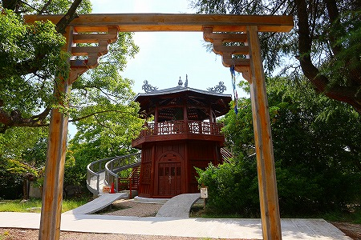
八角二層のその塔はチーク材で出来ているのだろう。日本の寺院建築にはない色ツヤだった。
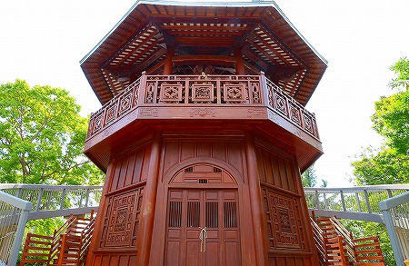
窓枠の細工などもどこか東南アジアの仏堂を連想させる。
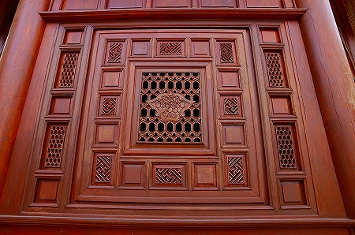
細かい細工だ。
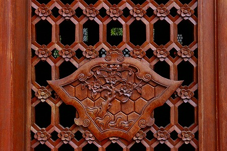
中はまだ未整備だったみたい。
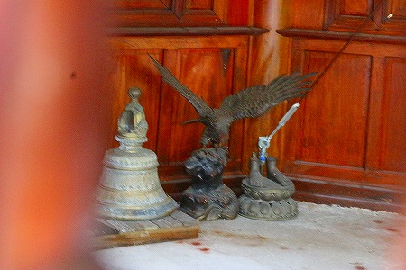
塔を囲むようにコンクリートのスロープが取り付いている。さらにスロープの内側には階段があり、2階に登れるようになっている。
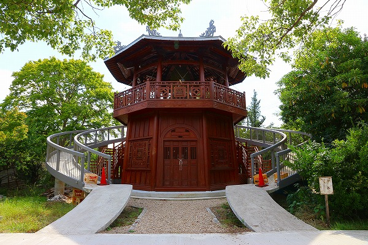
まだ、スロープの方は未完成だったようなので階段で上ってみよう。
こんな感じ。
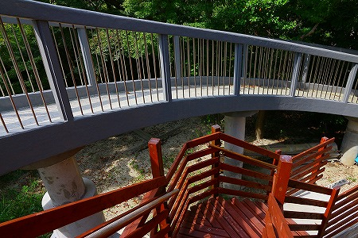
中央の塔が工芸品のように精緻に作られているのに対して、階段部分はかなり見劣りがする。というかかなりしょぼい。
さらにコンクリートのスロープもかなり無骨。
中央の塔と階段とスロープの3者がまるで釣り合わないところが逆にこの塔の特徴ですらあるといえよう。
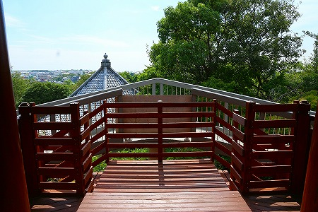
巨大な鐘がぶら下がっていた。
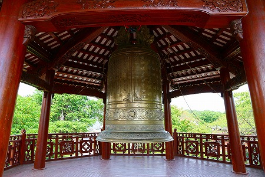
つまりこの塔は鐘楼だったのだ。
日本語でこの鐘の由来が刻まれていた。
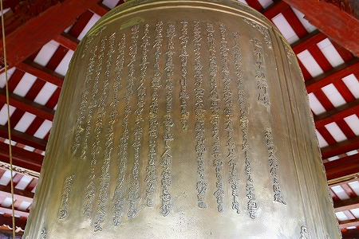
いわく、世界平和のために作られたのだとか。
今ある戦争を止め、他国のの人々とも平和に共生できる世界を希望しているのだという。
逆側にはサンスクリット語。同じことが書かれているのかな。
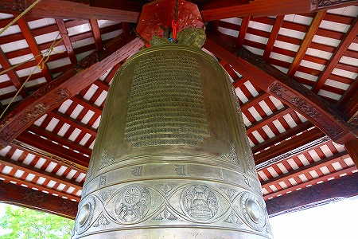
梵鐘の大きさは高さ3ｍ。直径は約1.8ｍ。重さは3トン梵鐘もあるという。
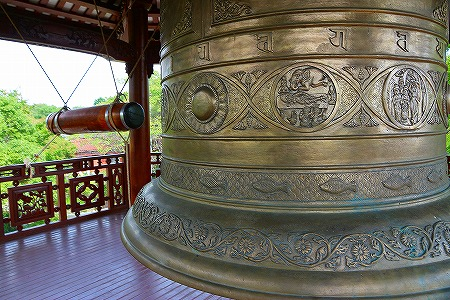
留学生の縁あってベトナムの古都フエで鋳造されたものだという。
鐘の下部には目玉のような模様の中に仏教説話の様々なシーンが彫刻されている。
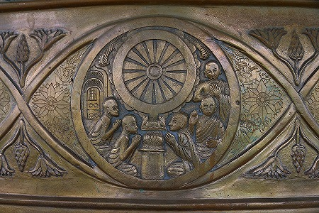
悟りを開いたところ。
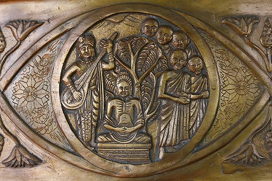
入滅。
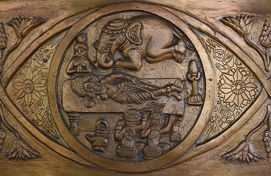
3トンの大梵鐘だけに吊ってある部分もかなり頑丈。
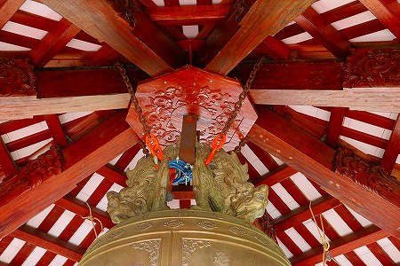
というわけで今度は反対側から降りてみる。
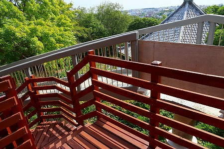
階段があるからスロープなんか要らないのでは、と思ったが車椅子の方のためのスロープだったのかもしれない。
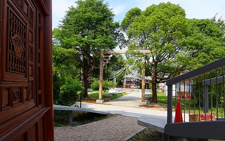
ちぐはぐだとか言ってスミマセンでした。
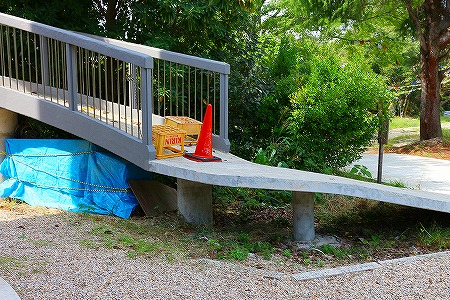
足の悪い人でも大梵鐘を間近で見られるように、との心遣いだったんですね…。
軒先の飾りなども異国風。この鐘楼も梵鐘同様ベトナムで造られたのだそうな。
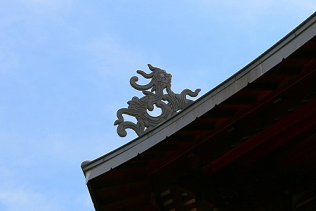
境内にあった一風変わったモニュメント。
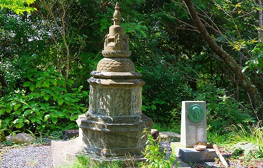
ネパールで亡くなった日本人の供養塔だった。
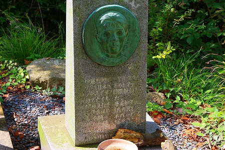
境内にあった屋内霊園。何故か宗派は問わないそうな。
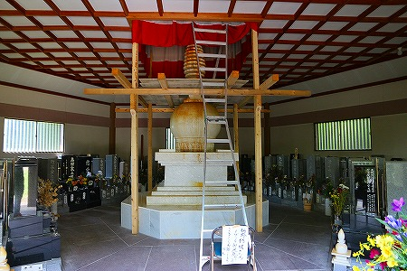
本堂の裏をウロウロしているとそれっぽい看板が。例の国際交流で多世代交流なレストランなのだろうか。
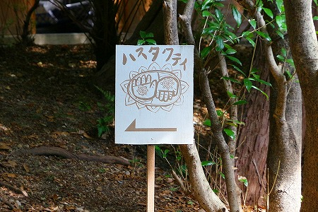
さらに先には作りかけの変わった建物が。
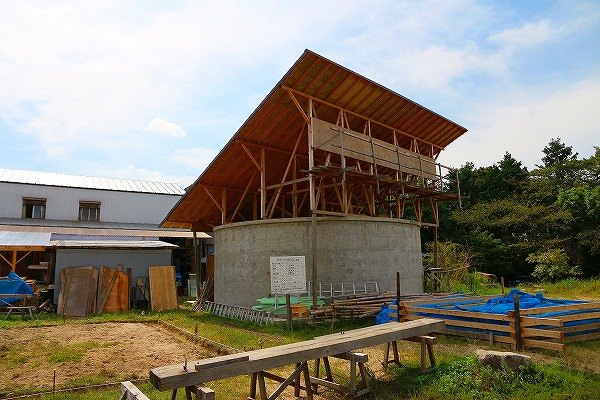
建築計画概要を見ると宿坊だとか。
どんな建物になるのか、完成した頃にまた見に行ってみよう。
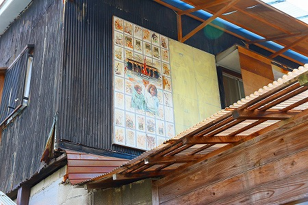
世界のアレやコレやを一堂に集めたためにチグハグな印象を受けたが、それは世界の全ての現象を受け入れようとする覚悟であり、そこに迷いは感じられない。
それは堂々たる混乱といったらいいのだろうか、雑多な中にも一本スジが通っていて妙な説得力があるチャーミングなお寺だった。
2012.10.
珍寺大道場 HOME